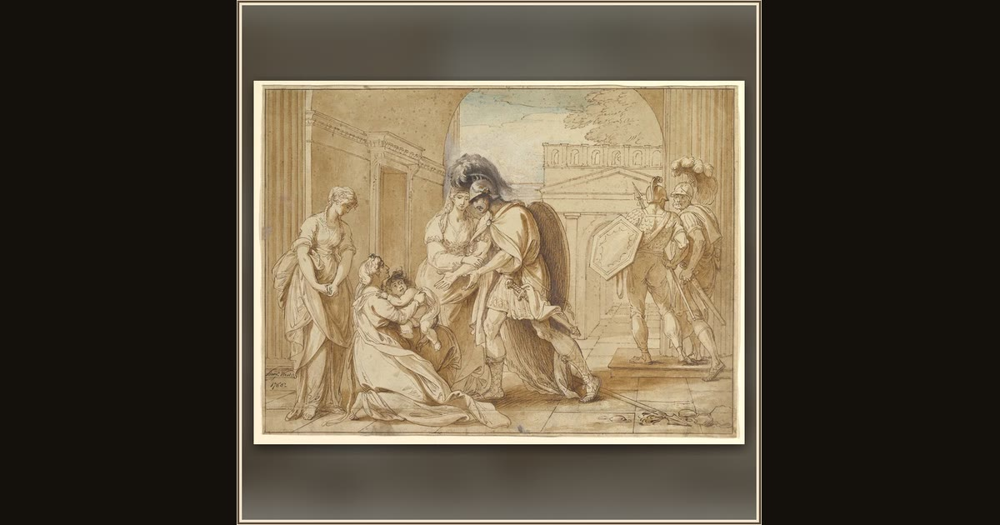

Hector taking leave of Andromache: the Fright of Astyanax
Benjamin West · 1766 · met
Hector in his plumed helmet takes leave of Andromache while the nurse holds Astyanax, who turns away in fright from his father's crest (6.466–470) Explore its place in Homer's Iliad, Book VI, line 467.